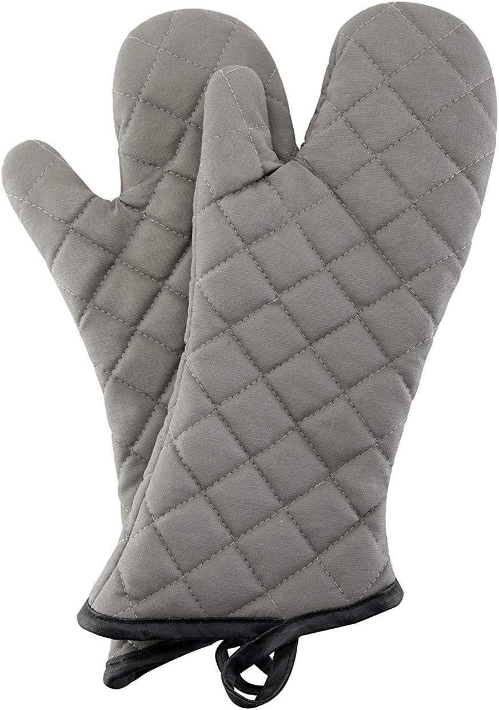
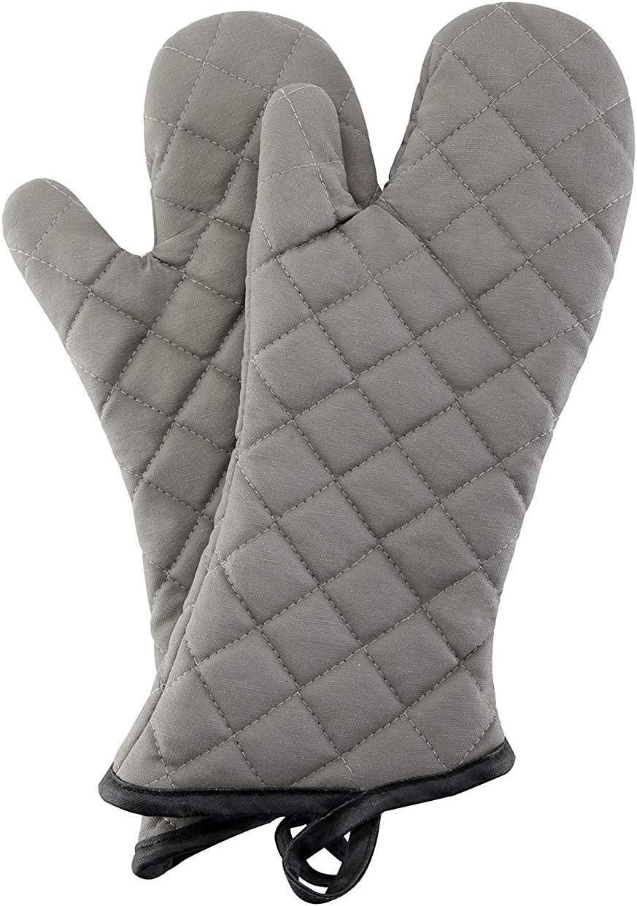

Welcome to ROYAL TEX HOME TEXTILE & GARMENTS
We creat top-Quality apparel & Hometextile products for clients
in developed countires for a less than average price . Our mission is
to prove to the world that is lovely country can do great things by
offering unmatched servise for companies big and small
Marketing department :
In simple words, the marketing department is the face of the factory. While the other departments will take care of the production of the goods, the marketing team will be responsible for the development of the company’s business.
• They will reach out to potential customers to persuade them to become new customers while maintaining relationships with old customers of the company. The team will make sure what the customers receive will exceed their expectations. As a result, the company retains customers and makes them marketer for you.
•Marketing department will use specific methods to make the company’s products more attractive to the demanding eyes of buyers. The company will sell like crazy when we showcase our design capability, factory compliance, and quality policy as it helps the company become trustworthy.
Design department
The designers team are responsible for research and development of new and trendy fashion models. In terms of products, this helps increase the reputation of the factory as it creates or follows the biggest fashion trend.
• Every season, the team will focus on delivering new fashionable designs to show-off the strength of the factory.
• They always own a library for fabrics, trims and accessories, and for garments.
Merchandising Department
In short, the merchandising department will receive orders from the buyer and satisfy their need to try out samples.The department employees will estimate materials and processing cost and inform those who are interested. This team also has to follow up the production status.
In a large factory, the merchandising team is divided into two groups: Sampling merchants and production merchants. Sampling merchants organize activities and exchange information related to sample garment for buyers. Production merchants process volume production orders, devise production plans, survey supply prices, and keep track on production status.
Activities of this department include:
• Exchanging information with buyers
• Review and develop samples
• Indicate the cost of the product
• keep goodwill with customers
• pre- and post-production planning
• Preparing Bill of Material (BOM) and fabric indent
• Source of raw materials
• Quality confirmation
• Elaborate Production File
• Run the Pre-Production Meeting
• Execute orders
• Providing customer care
Pattern Making Department
In order to produce beautiful clothing patterns, factories will hire pattern masters to create garment patterns and digitize them into CAD (Computer Aided Design). The activities of this team include:
• Making and Grading Pattern
• Works on Samples
• Check and modify the product to match the standard output
• Editing products based on customer feedback
• Design a sample design prior to mass production
• Calculate the amount of fabric required to mass produce clothings
• Increase marker efficiency to decrease wasted fabric
Sampling department
Each time the buyer needs to test the goods, members of the sampling department are responsible for sending samples, handling customer feedback and informing the customer’s request to the production department.
• Understanding the garment specs and workmanship of the garment.
• Help with quotes for customers
• Estimate the amount of fabric needed
• Fully complete the cutting, stitching, finishing and inspection steps to produce the prototype for the customer. Then make a detailed report on the sample to the customer
• Perform the fabric shrinkage test
• Coordinate with the production team to correct the inadequacies and make the complete clothing style
Fabric Storing department
Fabric Storing department
They are the people who store a large amount of fabric for the cutting department
They have the following duties:
• Contact and understand your factory’s fabric supplies
• Receive and store fabrics in bulk, manage fabrics inventory record
• Check the untreated fabric and the treated fabric
• Elaborate shade band for colored and printed fabric
• Test fabrics physical properties
• Fabric Issue
• Fabric printing
• Track what fabric is used for
Trims and Accessory Storage
Glamorous ornaments on dresses and suits are an indispensable part to enjoy a perfect grande soirée. Usually the person in charge of this task is also the member of the fabric storage department.
• Find the supplier for all kinds of materials like sewing thread and accessories to make trims
• Quality control and quantity of trims and accessories
• Preserve and preserve quality trims available
• Handling problems related to reserves
• Dye the twill tape
• Arrange and deliver trims to the requesting party..
Production Planning and Control department
As its name suggests, this department is responsible for planning and ordering the order processing. The work of the PPC department is intimately tied to all production processes. The components will be scheduled for processing in the production plan to keep up with the work progress. If the size of the factory is small, the department will be merged with the merchandising department.
Production Planning and Control department of large factories has the following duties:
• Scheduling tasks for the workforce
• Ask the storage for raw materials
• Loading Production
• Plan and execute production
• Location of the establishment
• Evaluating the amount of product and fees of production
• Perform estimation on the production capacity
• Plan ahead for the production line
• Production follow up and execution
Cutting department
This is the department that will execute the cutting of large fabrics into sizes for reassembly at the sewing department.
This team will do:
• Obtain and process fabric softeners from the factory’s storage
• Cut and lay the fabric into layers
• Maximize the amount of fabric used and reduce the amount of fabric wasted when cut
• Sort, sort, count the number of pieces of clothing
• Inspect the fabric cut
• Sorted and cut printed and embroidery panels
• Fusing individual parts of the garment
Sewing department
Sewing department
After receiving the processed fabric at the cutting department, the sewing floor will assemble the fabric into clothes through a chain of production. So their work includes:
• Production line installation, inspection and maintenance
• Sew the parts of the garment together
• Maximum amount of fabric used in sewing
• Iron the parts of garment
• Make changes to the sew way to make the garment more beautiful
• Check the quality of sewing parts made of sewing
• Take notes to track the production of your product
Machine Maintenance Department
This is a technical department that will take care of any problems related to sewing machines. Their tasks are:
• Establishing the sewing machines
• Maintaining and fixing the sewing machines and equipment
Washing department
Washing department
The department has one job is to remove the dust and tracing mark on the stitched garments. This is a required work on samples and finished products because it will give a fresh look to the clothes
Finishing department
This department ensures that output will be in its finest look through the following jobs:
• Trimming the extra thread on the clothes
• Attaching, polishing buttons on garments
• Remove the stain and ironing the garment
• Folding and packaging the finished product
• Check and feedback to other departments of the production chain
Quality Control department
Quality Control department
They are responsible for ensuring the garments are qualified to be placed on the market
• Create standards for output products
• Give a set of step-by-step instructions to help workers carry out routine operations
• Quality Assurance
• Eliminate items that do not meet standards
• Make sure the quality of the fabric received by the cutting department is the fabric without defects. If there is a minor error in the fabric, this department will mark it up and give the solution to the cutting department
• Reporting and conducting meeting on output product quality
Accounts department activities
• Pay salary, manage the company’s account
• Make advance payment, recompense payment for production costs
• Collection of debts on buyers
Human Resource and Administration
• Recruit new employee and ensure social welfare of employees
• Keep a record of the employees who worked at the factory
• Take care of labor issues
• Receive feedback from employees on labor status
• Guide newcomers to work at the company
Design department
Merchandising Department
Pattern Making Department
Sampling department
Fabric Storing department
Trims and Accessory Storage
Production Planning and Control department
Cutting department
Sewing department
Machine Maintenance Department
Washing department
Finishing department
Quality Control department
Accounts department activities
Human Resource and Administration
CUTTING
4 cutting units working under the supervision of skilled unit managers, these cutting units are well equipped with latest machinery .STITCHING
With over 450 stitching machines, manned with the most skilled and expert operators. The Quality control and Quality Assurance departments are in place to make sure the company’s objective of zero defect. Computerized Bar coding and Back Track systems provide ROYAL TEX 100% predictability and tracking performance.Finishing
We have 3 finishing departs under the supervision of skilled managers . Each finishing depart have different tables of each work • Trimming • Stain removing • Repairing • PressingQUALITY LAB
There are quality checks at every stage of manufacturing starting from Raw Cotton, Yarn, Fabric, Processing, Cutting, Stitching and Packing. Before the fabric is cut, it is checked whether it conforms to the customer’s standards of shrinkage, finished g/cm2 etc. After each lot of fabric is cut, 100% cut parts inspection is conducted to ensure that only good quality pieces move to the stitching units.veiw products


 
